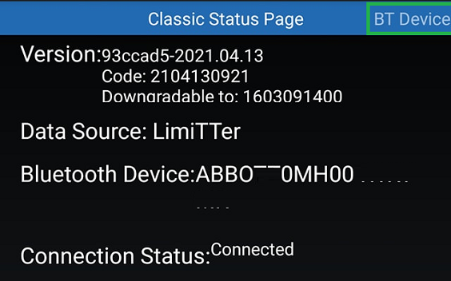

Libre Bridge
There are many commercial Libre bridges available on the market, by order of release you'll find Blucon, MiaoMiao, Droplet and Bubble to name only the most famous. They're all based on the LimiTTer concept and the blueReader implementation: an NFC reading chip CR95LF and a Nordic Semiconductors BLE microcontroller. The first one reads the sensor and the second one sends data through Bluetooth to your phone (or Wear watch) every 5 minutes.
Note
As long as your bridge can read the sensor and transmit data you can assume it is working correctly.
When xDrip+ shows missing readings you need to understand what is failing. This is not always easy.
Info
Start with simple things: first restart your phone.
Since you're here, check your xDrip+ Bluetooth parameters and don't hesitate to disable some.
Then go to System Status and also BT device. If you don't know how, look here first.
Classis Status Page⌁
If your bridge shows as LimiTTer it probably means it's not connected or not recognized.
All devices report as LimiTTer until connected, only Libre 2 direct connection and some older bridges (Transmitter_T for example) will remain indicated as LimiTTer (and obviously LimiTTer itself).

Check xDrip+ version and make sure it's recent enough to support the bridge you're connecting to.
There are too many versions and improvements in xDrip+ to give an accurate table of minimum required versions.
Make sure you use at least the latest release version of xDrip+ and if you think your bridge requires more recent features, try to update to the latest pre-release.
Don't uninstall xDrip+ when you want to change version. You can easily go back and forth between versions without losing data and settings.
BT Device Page⌁
Swipe the screen towards the left to display the BT Device page.


Bluetooth Pairing⌁
If you've been here before: Bluetooth pairing should be disabled, if you changed this by mistake: touch the line to return it to this state:
Bluetooth Device⌁
Bluetooth should always be connected.

First actions to perform if Bluetooth is not connected:
- Check your Bluetooth settings and Restart collector. If restart collector allowed you to recover connection, the issue might be with your Bluetooth settings or phone energy savings settings.
- Open Android Settings -> Apps -> xDrip+: make sure it can run in background and is not optimized for battery savings.
- Still in Apps look for Bluetooth system apps (might be hidden by default and present in the three dots menu, upper right): make sure all Bluetooth services can run in background and are not optimized.
If the bridge device still isn't visible try to Scan Bluetooth to find it.
- If scan Bluetooth doesn't find it continue here.
- If scan Bluetooth allows you to select it but it doesn't remain connected continue here.
Phone Service State⌁
Phone service state gives the last time data was received from the bridge, it should be less than 5 minutes ago.
Next wake up will count down to the next expected data to be received, then restart at 5 minutes.

If you've setup an Android Wear watch as a collector go to the matching troubleshooting page. If you don't own an Android Wear watch with xDrip+ correctly installed on it, disable Wear collector.

Do not attempt to connect your bridge to a smartwatch until you have a reliable behavior with your phone (no connection loss).
Bridge information⌁
You will also see various information on the bridge like Mac address, hardware and firmware version. Note that battery level is not available on Blucon bridges and 100% will only mean that it's still usable.

It is strongly recommended to upgrade your device firmware to the latest available version.
No Sensor Found⌁
No sensor found errors are usually due to bad positioning of the bridge over the sensor. Some bridges do not have any tolerance in respect with distance and angle to the sensor antenna area. It might also be due to an internal bridge issue, firmware issue, ...
Since this is a persistent message, check the time indicated is recent. If it is permanently 5 minutes ago, the sensor is not seen. If it happened a few hours ago, just ignore it.

If you're using a bridge that isn't sensitive to positioning, it might have an internal failure or firmware corruption.
- First reset it and charge it completely.
- Try to reload or update its firmware.
If you're using a sensor that is not a Libre 1, you might need to add an Out Of Process algorithm.
Forget Device in xDrip+, install the vendor app to exclude a device failure. Contact the vendor for support.
Bluetooth scan doesn't find the bridge⌁
Note
This is absolutely normal when your bridge is connected to xDrip+.
- Make sure it's not paired to another phone or another app. If you use the bridge with another app, remove it from the app or uninstall the app that connects to it. If you used the bridge on another phone, power it off now or remove the app that was connecting to your bridge.
- Reset it. Contact the vendor to know how to do that.
- Put it in charge or replace the battery.
You can scan Bluetooth with your device in charge and if you only can connect to it whilst charging, the internal battery might be dead.
Install the vendor app to exclude a device failure. Contact the vendor for support.
Bridge doesn't stay connected⌁
When you scan Bluetooth, you can see and select your bridge (usually it shows in blue as a known device) but it doesn't keep connected: when scanning again Bluetooth it will show again.
Solution 1:⌁
- System Status, Classic Status Page -> Forget Device
- Main Menu, Scan Bluetooth -> Select any Bluetooth device that is not your bridge
- Wait 10 seconds
- System Status, Classic Status Page -> Forget Device
- Main Menu, Scan Bluetooth -> Select your bridge
Solution 2:⌁
- System Status, Classic Status Page -> Forget Device
- Set the phone to airplane mode
- Wait 10 seconds
- Disable airplane mode
- Disable Bluetooth
- Wait 10 seconds
- Enable Bluetooth
- Main Menu, Scan Bluetooth -> Select your bridge